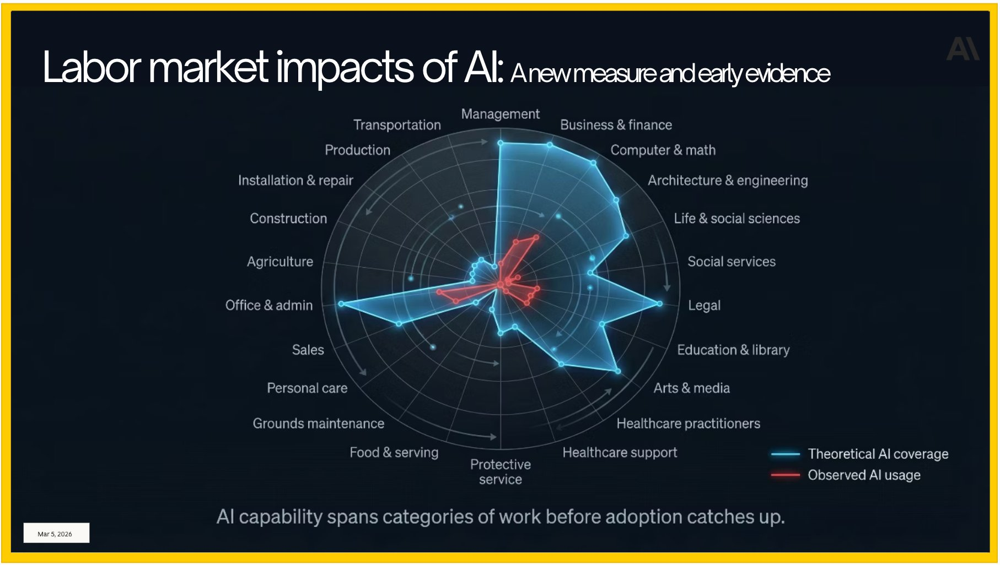
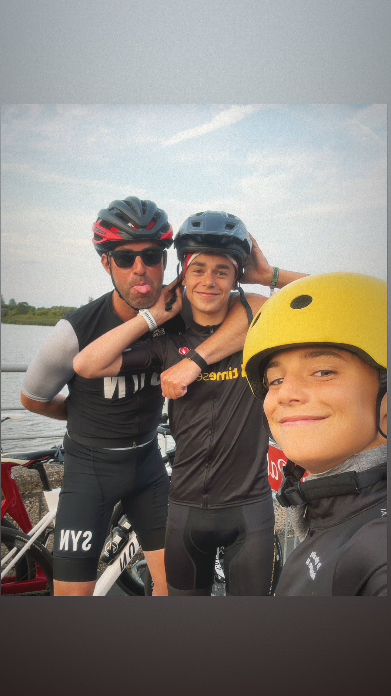

Career intelligence for the AI era
The careers you pick today will define your life for decades. AI is reshaping every profession — faster than anyone expected. The earlier you start thinking clearly about this, the better your future.
✨ Ontdek jouw beroepExplore 235+ careers →
Somewhere on a ride with my two boys.
They have no idea how much I think about their future.
A letter to my sons
I am writing this as your dad — a second-generation entrepreneur, CEO of a tech company, and VC partner who has spent the last few years watching AI reshape everything I thought I understood about work, talent, and value.
I am not worried about you. But I am paying close attention for you.
Stay hungry and stay foolish. Those words from Steve Jobs are more true now than when he said them. The world does not need more people who are comfortable. It needs people who are restless, curious, and willing to spend a decade mastering something that matters. That is the only career advice I know to be true.
We were born into extraordinary times — not easy times, but extraordinary ones. The science, the technology, the opportunity — none of this was promised to us. That is not a reason to feel pressure. It is a reason to feel grateful, and to do something with it. Whatever you build, build it in a way that gives back to the community around you. Health is not a luxury — it is the foundation. Without it, nothing else holds.
This site is not a prescription. It is a map. Browse it without obligation. When something makes you feel a small fire — follow that. The world will bend around people who are genuinely on fire about what they do.
With love, and a lot of respect for the people you are becoming.
Why this matters for every young person
A Microsoft veteran recently dug into the data and found something uncomfortable: most people are sleepwalking into careers that AI will hollow out within a decade. The jobs that survive won't be the ones that sound impressive at a dinner party. They'll be the ones that require something machines still cannot fake — physical presence, moral judgment, human trust, and creative courage.
The surgeons, engineers, and AI researchers who will thrive in 2040 are already curious about these fields today. Curiosity, followed by years of practice, is the only real competitive advantage left. The earlier you start, the longer the runway.
The data behind the decision
This radar chart from Anthropic's research shows the gap between what AI is theoretically capable of and what it has actually replaced. The opportunity is in that gap — and it is closing fast.
Source: Anthropic — "Labor market impacts of AI: A new measure and early evidence" (March 2026)
How we scored every career
168 careers. 22 sectors. Honest scores. Real videos. Everything you need to start choosing with your eyes open.
Open the career encyclopedia →